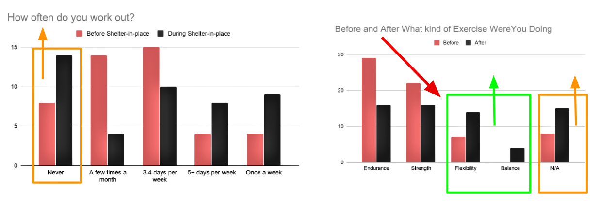
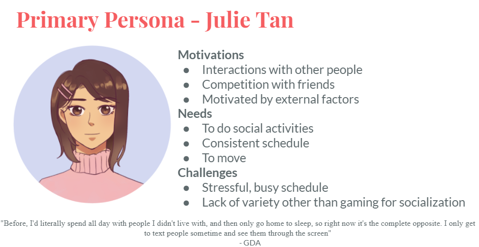
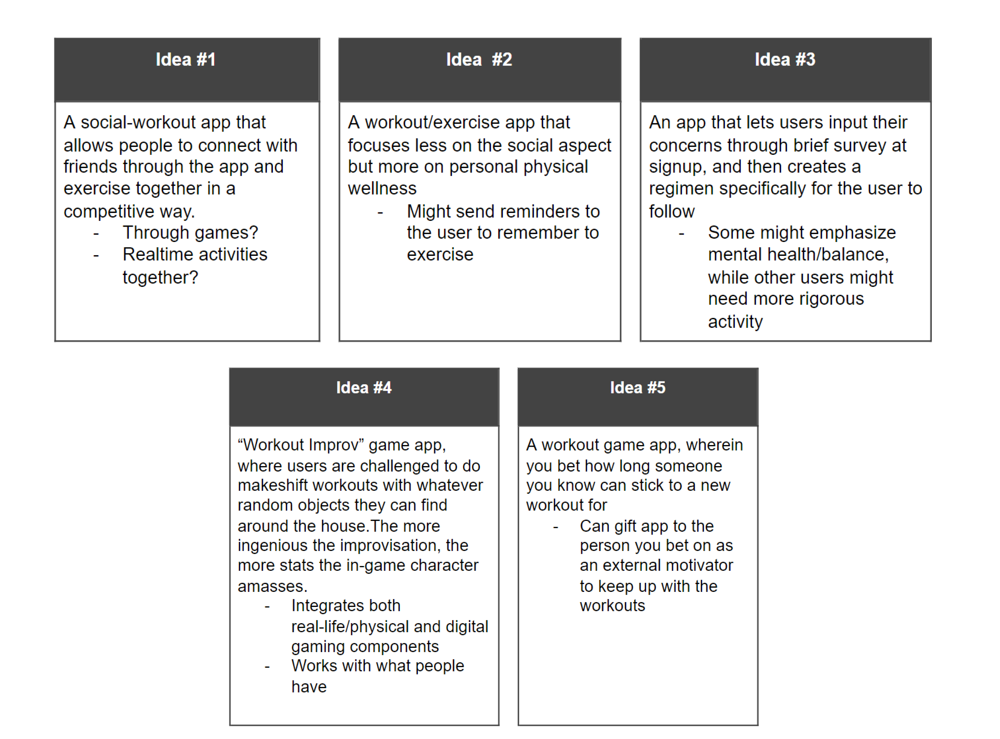
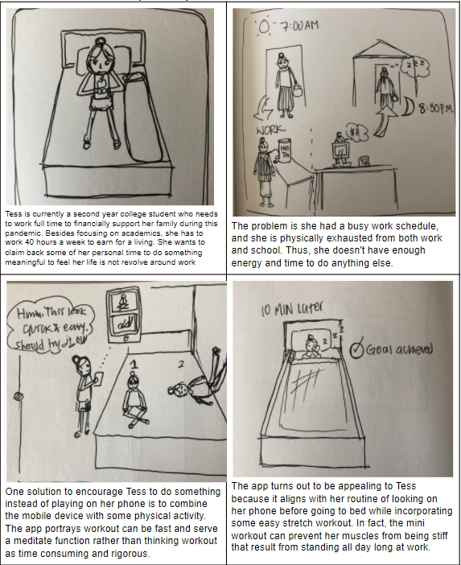
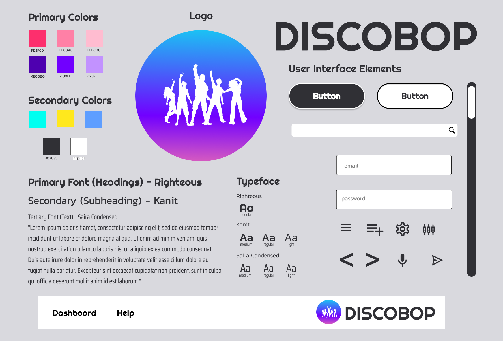
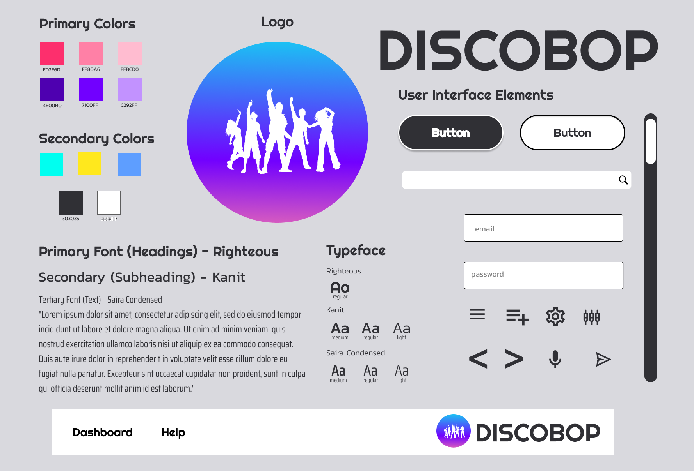
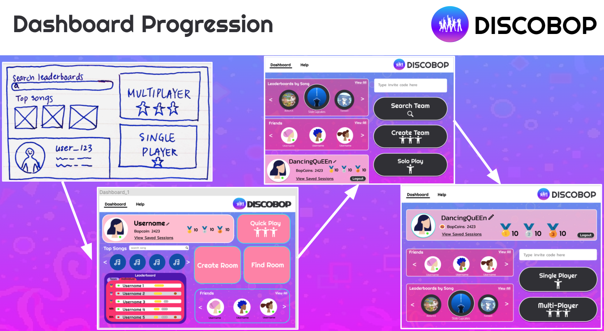

My Role
UX Designer
Time Range
5 Weeks
Team
Lucas Jonasch, Audrey Goo, Monica Van, Audrey Fu, Zhen Xu
Navigation
Introduction
Ever since the pandemic, many people have gone through different sets of struggles, such as economic losses, deficient in physical and mental health due to numerous laid offs, reduced amount of exercise, and reduced amount of in-person interaction. This is a school project that seeks to motivate people to be more physically active in maintaining their physical and mental health, especially during the pandemic time.
Mission Statement
Our rationale behind this project is busy, mentally exhausted young adults reliant on self-motivation need a form of external, social interaction during home isolation in order to feel motivated and fulfilled. And our mission is to address this by encouraging users to engage in physical activities with their friends through the final deliverable of high-fidelity prototype.
Research
My team and I initially conducted a secondary research to narrow down the problem space from bettering the home isolation experience to encourage people to be more physically active through an application. The rationale is support by the government proposed campaign that emphasize “staying active” is the best strategy to maintain a healthy body and decrease the likelihood of being affected by the flu season. Yet, a contradicting influence found on some of the most popular video games that arise during pandemic (ex. Animal Crossing) that is lowering the incentives to be active during home isolation. Hence, we want to create an app to counter this contradicting influence.
After the secondary research, we conducted our own primary data set by distributing surveys and follow-up interviews with the goal to find what users are experience throughout the shelter-in-place experience. Some of the following questions:
- Are you usually physically active during the home-isolation?
- If yes: How often, and what types of exercise do you do? Why do you exercise?
- If no: Why not? (Try to find out if the participant does want to exercise or be more on top of physical health but just doesn’t have the motivation for it—these people would most likely be our target audience)
- What motivates you to get things done? (Can be work, exercise, etc.)
- What activities do you do to relax?
- Can you describe your everyday routine?
- How has it changed before the shelter-in-place experience?
- Have you been able to maintain a routine? Why or why not?
Analysis
To summarize the findings, there is a net decrease. And there are 2 extreme patterns, such as people who used to work out prior the pandemic tend to work out more during the pandemic, but in different ways, with more people adopting flexibility and balance exercises like yoga when in isolation. This mean but in different ways, with more people adopting flexibility and balance exercises like yoga when in isolation.
There is lack of motivation was a huge theme throughout our research. In comparing how little motivation and activity they had now compared to before, our participants stressed more when they couldn’t meet their own expectations for how motivated they should be.
We also deduced that shelter-in-place is so suffocating because the social motivators that people would rely on before were now changing or seem to be off the table. For example, gym buddies could no longer instill workout motivation. Therefore, cultivating motivation and establishing structure has never been so reliant on their own willpower. And it is this perception that people need to rely on themselves for motivation that makes people stress over the fact that they didn’t have enough of it.
There is also a negative stigma about working out is associate with the notion of exhausting and hard core. Hence, we avoid the concept of launching a fitness app and still allow the users to be physically active to an extent along with the social component.
Persona
Given the amount of survey respondents who reported not working out regularly, we constructed Julie to represent a young adult who doesn’t work out but realizes that she needs to get out of bed, develop some routine, and socially interact with friends.
Julie’s challenge during this time is finding sufficient self-motivation to be active, so we explored how external factors, such as competition/gaming and social might push her to be active.
Iteration throughout the Research
- We started with trying to find ways to improve user’s ability to cope with home isolation during shelter in place
- After doing our secondary research, we realized that many college students were no longer getting the physical activity they needed/wanted
- Many of the questionnaire results pointed to the fact that people were struggling with the mental aspect and with social isolation itself in addition to physical health
- After Interviews, we found that the mental and physical health are closely tied together for many individuals and decided to focus on motivating people through social interaction and physical activity
Ideation
Before coming with the actual prototype, my team decided to dive into an ideation process of coming up with potential solutions to the selected problems: "How might we help mentally exhasuted users through workout due to social isoltion and spatio-temporal constraints?"
Storyboard
The purpose of I create a storyboard is to visualize the potential problems our primary persona face and how our app can help them solve the problems.
The below storyboard aims to answer the question of "how might we help individuals who are physically drained from a full day busy schedule without having little time allocated to themselves?"
The context the user named Tess face is she's a second year college student who needs to work full time to financially support her family during pandemic. Besdies focusing on academics, she has to work 35 hours a week to earn for a living. She always wants a quick workout as a way to claim back her free time.
Tess's problem is regarding her fully booked schedule and the only time she has is right before her bedtime. One potential solution is she finds an app that detach the notion of workout being time-consuming and rigorous. The apps promotes brief workout (ex. Yoga gesture) that can also help her meditate.
The resolution is Tess finds the app helpful to an extent since she will always go on her phone before she falls alseep. By interacting with the app, she can at least claim back some of her time in the sense that she's doing something meaningful.
Prototypes
Lo-fi Prototype Navigation Flow
- Start screen shows the user with "get started" button and the logo to inform the users about the app
- Sign up with account of choice
- Profile Creation that allow user to customize their avatar and username to make the app more relatedable
- Home screen that should include the functions, like editing profile, showing gameplay with the group and solo mode, and allowing the users to search for leaderboards of songs to evoke a competitive mindset among users
- Users choose the group gameplay for 3 options: compete against friends, collaborate with friends and freestyle
- Users choose single player aim to practice getting a high score
Mood Board and Design Guide
Because this application encourages people to become active, we aim to deliver a vibrant, dynamic, cathartic feeling. The mood board then help us establish a design guide as a way to maintain consistency for the hi-fi prototypes and ensure we are are communicating the right mood throughout the prototypes.
 

Hi-Fi Prototypes
Explore through the Hi-Fi prototype here
The first step of the prototype include welcome screen and avatar customization. In the low-fi prototype, we only intended to feature the logo, mission statement, and login buttons, but the initial user tests pinpoint that we had to verbally give context for what the webapp is about. Since we can’t be there to explain what the webapp was to every user who comes by, we decided in our hi-fi to include our FAQs here, so that new users know to expect a social dancing game.

All of the the positions in the design are intentionally placed based on the user testing's result. For instance, the iteration of dashboard's design is placed with 2 user testing results, such as placing user profile at the top because the users indicate one of the first things they wanted to do after signing up was to check their avatar as reassurance. Placing the profile section on the top direct attention back to the users.
We also decided to reduce our game buttons down to solo and multiplayer, since according to our user testing, this was more intuitive than having three options, two of which--find team and create team--represented multiplayer. We settled on two modes to avoid redundancy.
Overall, you can also see how we juggled to find the right balance between the visibility of the user profile and the prominence of the play buttons and how we ended up relying on establishing a logical left-right progression to convey how users should parse the information on this dashboard.

Our hi-fi user testing found that since the prototype could only offer an animation of how things might unfold on the screen, many people did not realize that the game operated using a webcam. To add more clarity, we added a mini tutorial to show how users need to properly situate themselves in front of the webcam before they are ready.
Reflection
This school project is only given a certain amount of time; hence, there are many time constraints to implement a full-scale project. In order to track the successfulness of this webapp, it's important to conduct another set of user testing and see how the users navigate through the hi-fi prototype and whether if it has an intuitive navigation.
Lessons Learned
This project includes many pivot moments, and I learned that that through the research phase, it enables our team to narrow the general theme- home isolation- down toward a specific mission- coping users' mental health via encouraging them to be physically active. Each pivot moment is difficult to recognize because it implies the potentiality of getting rid of some of the works already established previously and conduct further research to reinforce the new idea. However, it is through the constant iteration that finalize the deliverables.